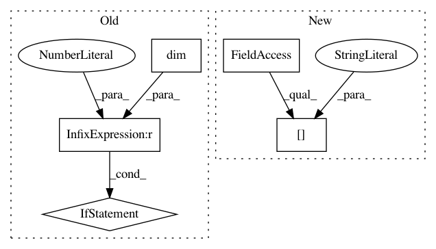

d4e602e3f75b5599f08083d862205dc333a17c3e,gpytorch/kernels/grid_interpolation_kernel.py,GridInterpolationKernel,forward,#GridInterpolationKernel#Any#Any#Any#Any#,144
Before Change
base_lazy_tsr = self._inducing_forward(last_dim_is_batch=last_dim_is_batch, **params)
if last_dim_is_batch:
base_lazy_tsr = base_lazy_tsr.repeat(*x1.shape[:-2], x1.size(-1), 1, 1)
if x1.dim() > 2:
base_lazy_tsr = base_lazy_tsr.repeat(*x1.shape[:-2], 1, 1)
left_interp_indices, left_interp_values = self._compute_grid(x1, last_dim_is_batch)
if torch.equal(x1, x2):
right_interp_indices = left_interp_indices
right_interp_values = left_interp_values
After Change
left_interp_indices.detach().expand(*batch_shape, *left_interp_indices.shape[-2:]),
left_interp_values.expand(*batch_shape, *left_interp_values.shape[-2:]),
right_interp_indices.detach().expand(*batch_shape, *right_interp_indices.shape[-2:]),
right_interp_values.expand(*batch_shape, *right_interp_values.shape[-2:]),
)
if diag:
In pattern: SUPERPATTERN
Frequency: 4
Non-data size: 5
Instances
Project Name: cornellius-gp/gpytorch
Commit Name: d4e602e3f75b5599f08083d862205dc333a17c3e
Time: 2019-11-25
Author: gpleiss@gmail.com
File Name: gpytorch/kernels/grid_interpolation_kernel.py
Class Name: GridInterpolationKernel
Method Name: forward
Project Name: cornellius-gp/gpytorch
Commit Name: a7a12d157766b69cf4b1ddbb5fcdacfe485dc6fa
Time: 2019-04-03
Author: gpleiss@gmail.com
File Name: gpytorch/kernels/grid_kernel.py
Class Name: GridKernel
Method Name: forward
Project Name: cornellius-gp/gpytorch
Commit Name: 5272720e291d084e775df43a4e1920fedb48887b
Time: 2019-05-10
Author: balandat@fb.com
File Name: gpytorch/models/exact_gp.py
Class Name: ExactGP
Method Name: get_fantasy_model
Project Name: cornellius-gp/gpytorch
Commit Name: 91b0d220c8e816766fd4565e1d2f5115d3afbefe
Time: 2018-10-12
Author: gpleiss@gmail.com
File Name: gpytorch/utils/eig.py
Class Name:
Method Name: batch_symeig